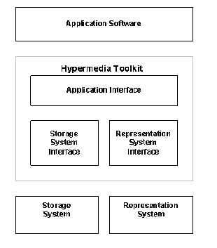

Hypermedia – Hypermedia Toolkit
2.3 Hypermedia Toolkit
The toolkit approach mentioned by Haan et al., has been attempted by Puttress and Guimaraes. They have proposed a toolkit that could be used by application developers to add hypermedia functionality to their existing toolkit, independent of specific applications or environment [Puttress & Guimaraes, 1990]. The hypermedia toolkit architecture is similar to other multi-tiered architectures (see Figure 6.3). The layers are: Application Software, Hypermedia Toolkit Layer, Storage System, and Representation System. The hypermedia toolkit consists of the following three components:
- Storage System Interface (also called Eggs): This interface consists of a set of C++ classes, providing a hypermedia structure to the stored application data. It provides the mapping between the application above and the storage system below. Thus, the storage system can be modified or changed without modifying the application. Similar to the HAM approach, the data model is made of graphs, contexts, nodes, links, attributes, and symbols. This interface does not interpret node data – it is just considered as a stream of bytes with no structure or meaning. It provides version control and concurrency control mechanisms. There is finer transaction management under the control of the application.
- Application Interface: This interface is composed of data objects that communicate with the application above.
- Representation System Interface: This interface is responsible for the presentation of views using user interface toolkits, independent of the display platform. The Application Interface and the Representation Interface are made of a set of C++ classes, together called Hypermedia Object-oriented Toolkit (HOT). HOT provides the abstractions required for hypermedia applications while encapsulating the details of the storage and representation systems. HOT consists of Data classes that include: HGraph, HContext, HNode, and HLink. It also consists of View classes for each of the Data classes: HGraphView, HContextView, HNodeView, HLinkView and HFrame.

Figure 6.3: Hypermedia Toolkit Architecture [Puttress & Guimaraes, 1990].
Puttress and Guimaraes report that this architecture will be extended to support multi-user environments, to provide effective means of sharing and communication between users of hypermedia applications, and exploring means to the development of collaborative hypermedia [Puttress & Guimaraes, 1990].